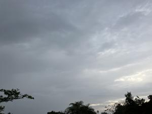
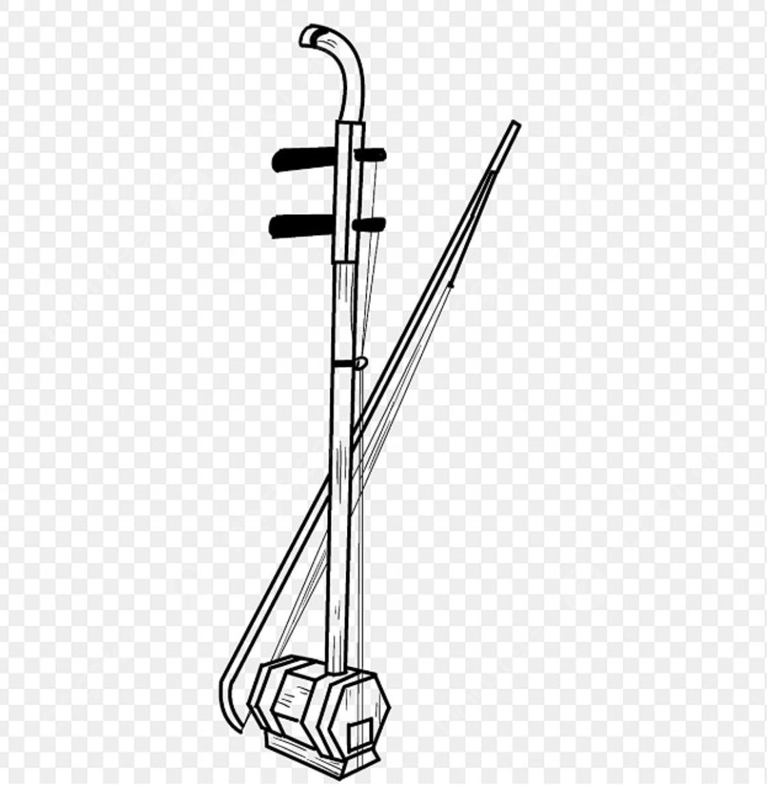
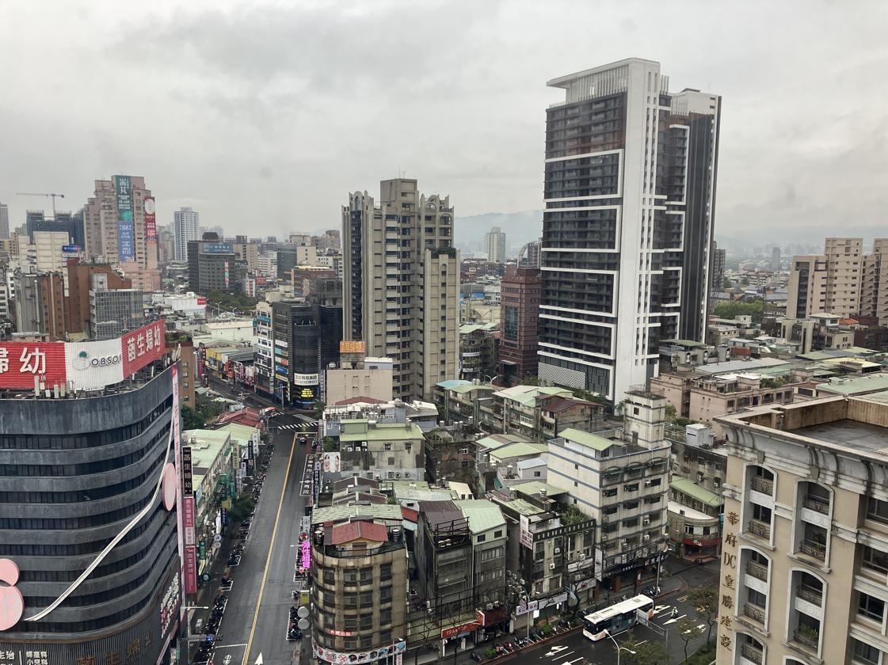
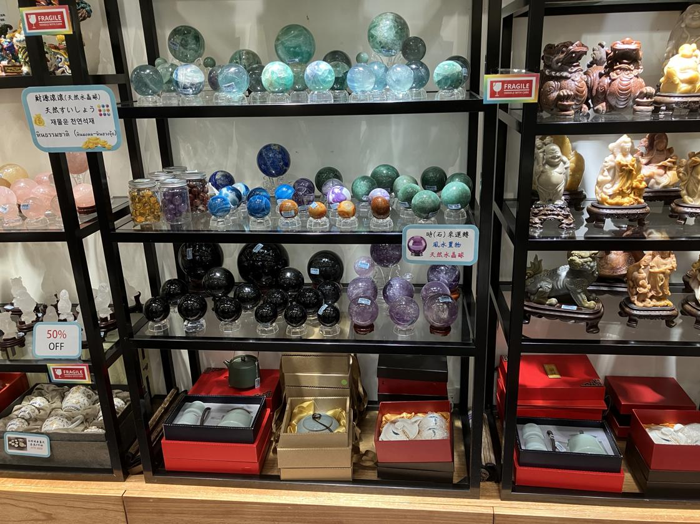
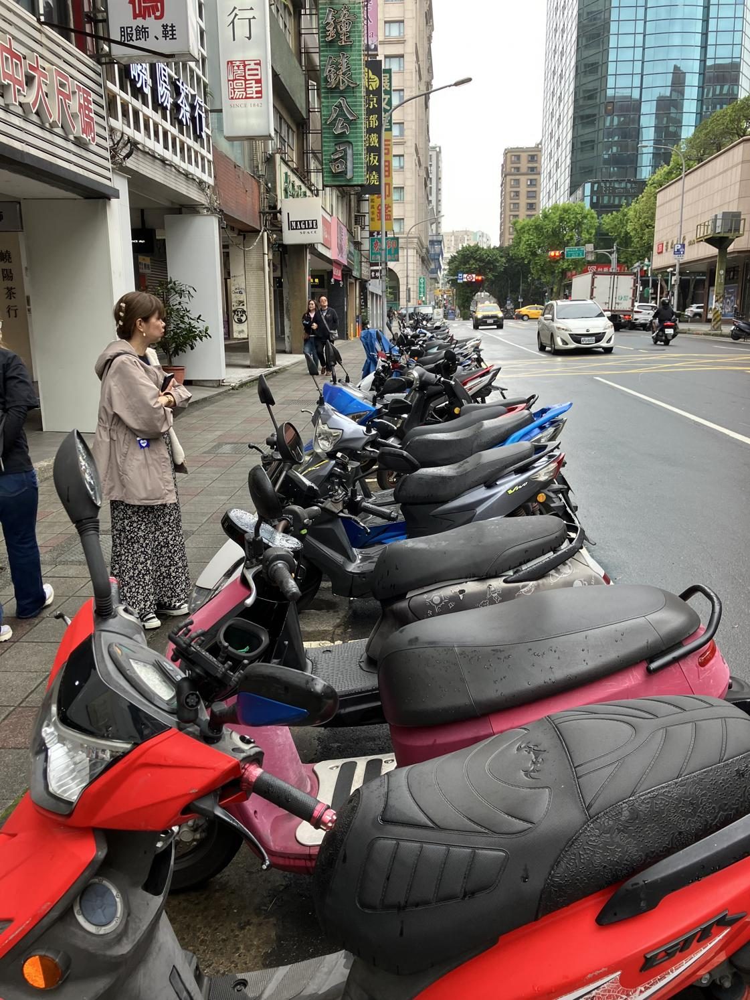

うるがいの話 ある日
最新: 二胡【うるがいの話 ある日】とは 一日だけのプログです
『うるがいの話』の最新一日だけのプログで、通信料が少なく経済的だ。カニの画像をクリックすると全ての日付が載る『うるがいの話』サイトを表示します
|
|
【うるがいの話】 うるがい(ｳﾙｶﾞｲ urugai)とは、『もずくがに』の名前でとても大きくなります。 |
|---|---|
|
|
【カミマヤーの話】 猫のことを方言でマヤーといいます。カミマヤー（kamimayaa）とは、神の猫のことです。 |
|
【たながぁの音楽】 たながぁ（ﾀﾅｶﾞｰ tanagaa）とは手長えびのことで、何種類かあり大きいのは車 エビぐらいになります。 |

|
【ぶながぁの話】 ぶながぁ(ﾌﾞﾅｶﾞｰ bunagaa)とは、赤い髪の毛、赤い身体、そして身長は１ｍ２０ｃｍ ぐらい、川の蟹を食べているの目撃された。場所は沖縄県国頭郡大宜味村のと ある村僕の隣近所に住んでいる爺さんから、聞いた話です。 |
|
|
【ギーマの話】 ギーマ(giima)とは、山原の里山に咲くスズランに似た、 花を付けます。実は食べられます、 気が付くと口の周りが紫になっています。 |
2025年04月14日 (月）二胡
18:20

ヨメが二胡のＣＤを持ってきた。マンションでお義母さんが、利用
していたＣＤだった。ふーん、またもや二胡か、台湾でテレビをみ
る、ＢＳのＮＨＫをみるが飽きてので、韓国の古典楽器を演奏する
番組をみる。二胡の演奏がよい、ユーチューブ動画が作ったらとヨ
メに言われた。んー、サウンドフォントがあれば可能だがと答えた
が。ネットで探すとあった、挑戦することにした（暫しお待ちおば
）。

旅行から、はや１週間である。体調ももとに戻った、体重は少し減
ったが。下は、宿泊したホテルの１４階から、外を見た景色。

ツアーでは、お土産品店を２回ほどいれる。一回目でお土産を買っ
た。２回目は、宝石など硬貨な品を扱うお店、買わなかったが宝石
が好きな私は、現地の店員さんに商品棚の写真を撮っていいかと尋
ねる（英語かな）と小母さんが、手でこそっと撮ってと合図してく
れた。撮ったあとで、店内をよく見ると写真ダメと書いてあった。

台湾は、バイクが交通の主流である。バイクに何名乗ってもいいら
しい。３名のりは、普通に見かけた。軽自動車は、使わないのだと
言っていた、確かに見かけなかった。子供に軽自動車を台湾に持っ
て言ったら、台湾では軽自動車利用しないと言っていた。ま、車、
滅茶苦茶スピードだすからな。
小籠包付き点心料理のお店の前で駐車するバイクの列

子供の友達に、バイクが多いと話したら、少しニュアンスが違うよ
うな雰囲気、バイクは自転車のことで、我々が言うバイクはオート
バイと切り分けていた。